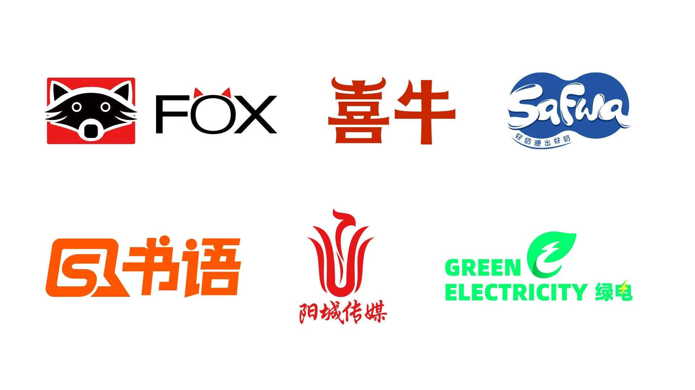
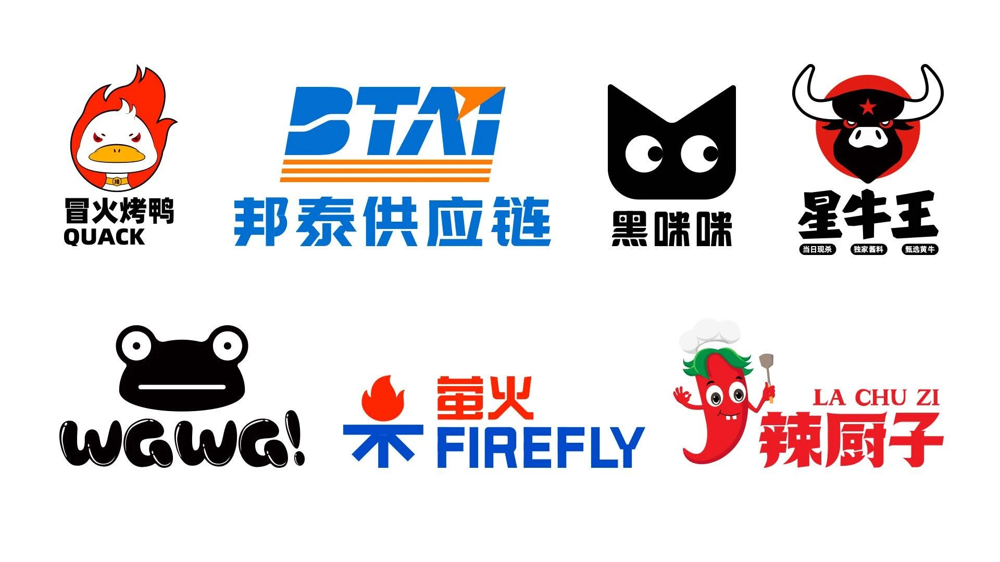
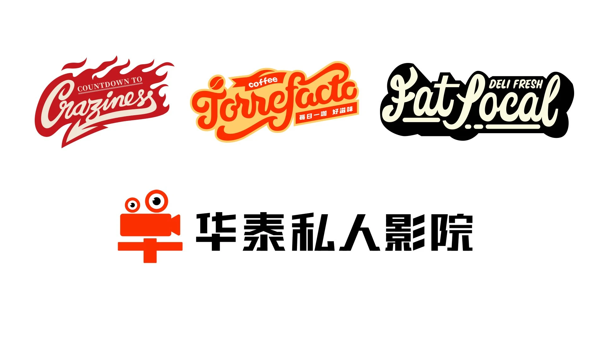
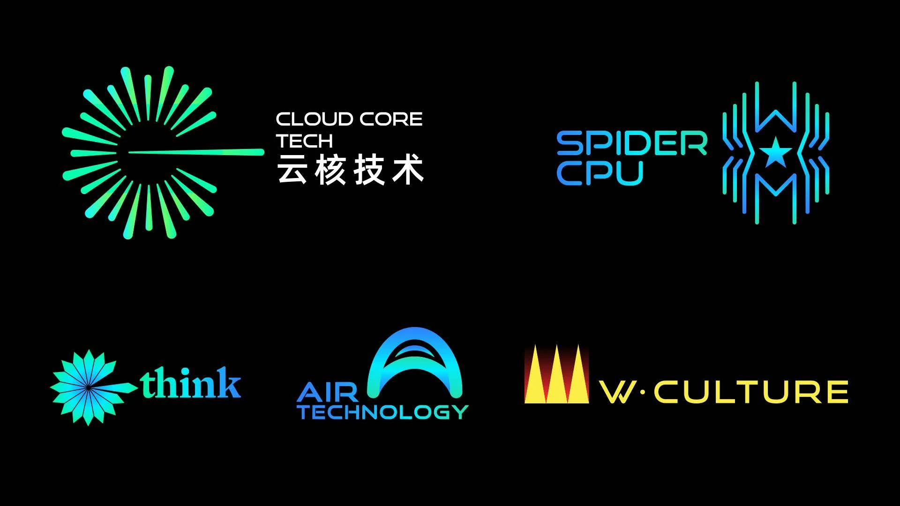
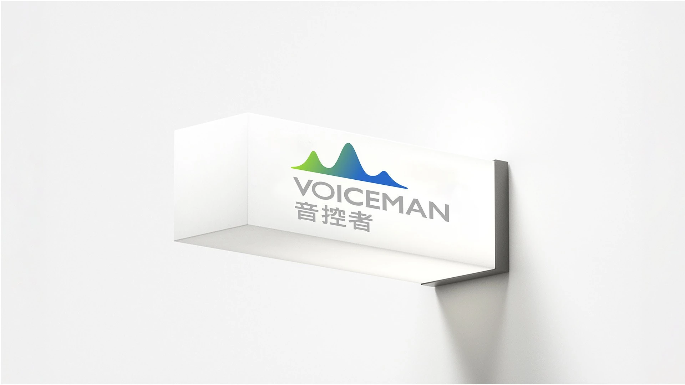
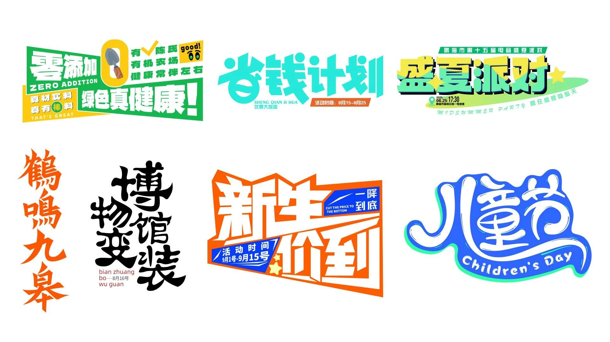
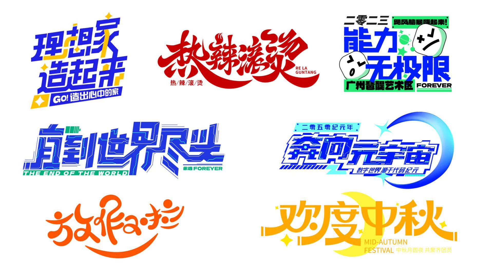

Logo 系统 让标志、字标和图形符号形成一套统一语言
Logo 页最适合展示结构、比例和识别逻辑。 不只是把标志摆出来，而是要让人一眼看出它是怎么成立的、怎么被使用的。
- 类型 / Category
- 标志 / 字标 / 符号系统
- 重点 / Focus
- 比例控制 / 识别性 / 统一感
- 场景 / Scene
- 黑白测试 / 标准制图 / 真实媒介
- 策略 / Strategy
- 强记忆 / 清晰结构 / 可扩展
LOGO设计
标志是品牌的视觉锚点——让抽象策略变成可感知的图形。
好的设计不求漂亮，而求准确、耐看、在任何尺寸和介质中始终成立。





字体设计
字体是品牌气质的无声表达。通过字重、字距、字型和排印节奏，为品牌
建立统一而独特的文字识别系统，让每一行字都为商业沟通加分。


设计流程
从策略到落地的完整路径——每一步都在为最终的视觉资产铺路。
- Step 01 策略先行 理解品牌定位、受众和差异化需求，确定视觉方向。
- Step 02 图形提炼 将策略转化为标志、字标和符号语言。
- Step 03 系统构建 建立比例、间距、色彩和延展规则。
-
Step 04
落地验证
在真实媒介中测试，
输出可运转的品牌资产。